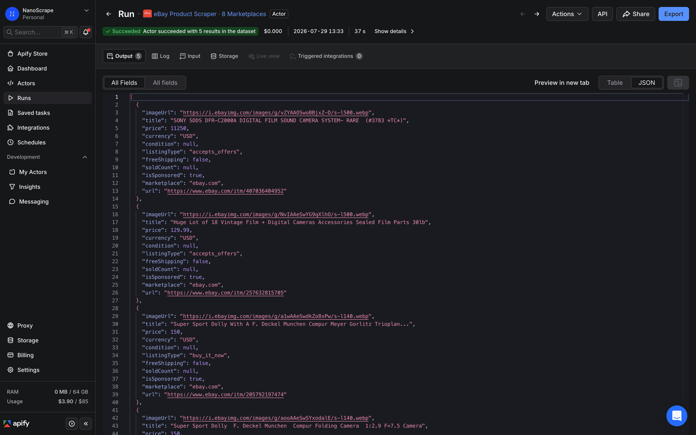
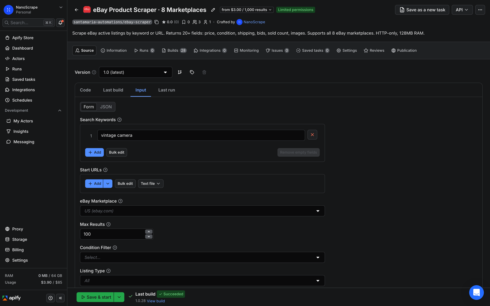
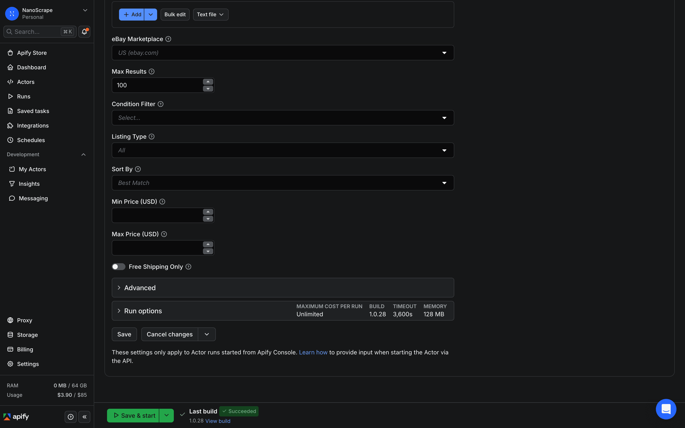
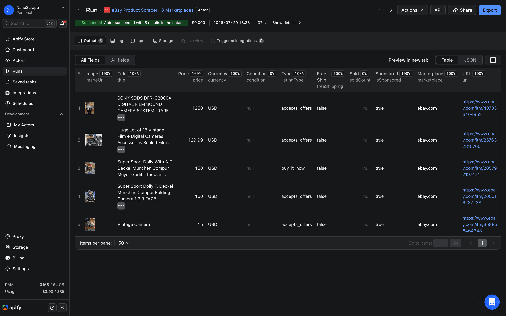

How to Scrape eBay Product Listings Across 8 Marketplaces
A practical guide to pulling active eBay listings by keyword or URL using the NanoScrape eBay Product Scraper. Each result includes price, condition, listing type, bids, shipping cost, sold count, watcher count, and 15 more fields. The actor runs HTTP-only with 128 MB of RAM, supports all 8 major eBay regional sites, and costs about $3 per 1,000 listings.

In this tutorial
What you get
Each run returns one JSON object per eBay listing. The object includes 20-plus fields drawn directly from the listing card:
- Pricing:
price,currency,originalPrice,discountPercent. For auctions,priceis the current bid. - Listing metadata:
itemId,title,url,marketplace,condition,listingType,isSponsored. - Auction fields:
bidsCount,timeLeft,bestOfferAvailable. These arenullon Buy It Now listings. - Shipping:
shippingCost,freeShipping,itemLocation. - Demand signals:
soldCount,watcherCount. Both arenullwhen eBay does not surface them on the listing card. - Media and provenance:
imageUrl,searchQuery,scrapedAt.
All monetary values use the currency of the marketplace you target. originalPrice and discountPercent appear only when eBay shows a struck-through price on the card.
{
"itemId": "256184730291",
"title": "Apple iPhone 15 Pro 256GB Natural Titanium Unlocked Excellent",
"url": "https://www.ebay.com/itm/256184730291",
"marketplace": "ebay.com",
"price": 749.99,
"currency": "USD",
"originalPrice": 849.99,
"discountPercent": 12,
"condition": "Refurbished",
"listingType": "buy_it_now",
"bidsCount": null,
"timeLeft": null,
"bestOfferAvailable": true,
"shippingCost": 0.0,
"freeShipping": true,
"itemLocation": "Austin, Texas, US",
"soldCount": 38,
"watcherCount": 204,
"isSponsored": false,
"imageUrl": "https://i.ebayimg.com/images/g/abc123/s-l500.jpg",
"searchQuery": "iphone 15 pro",
"scrapedAt": "2026-06-13T08:14:22Z"
}Prerequisites
- A free Apify account. Sign up at the actor page. Every account gets $5 of free monthly usage credit, enough for about 1,600 eBay listings.
Open the actor and sign up
- Open the NanoScrape eBay Product Scraper on Apify.
- Click Try for free. Sign up with Google or email. The free tier includes $5 of monthly credit, enough to test without entering a payment method.
- Once signed in, click Try for free again on the actor page. The Apify Console opens with the input form pre-loaded and ready to configure.

Set your search queries
The actor accepts two types of input. Use searchQueries for keyword searches, or startUrls for direct eBay search and category page URLs. At least one of the two is required.
Keyword search
Paste one or more search terms into the Search Queries field, one per line. The actor runs all queries in the same run and labels each result with the query that produced it via the searchQuery field.
{
"searchQueries": [
"iphone 15 pro",
"iphone 15 pro max"
],
"marketplace": "ebay.com",
"maxResults": 100
}URL search
If you already have a filtered eBay search URL from a manual search on ebay.com, paste it into Start URLs. This reproduces the exact sorting, condition, and filter combination you see in the browser.
maxResults to cap the total results across all queries. The default is 100. eBay typically returns fewer than 500 results per search term regardless of how high you set this.Apply filters
All filters are optional. They apply server-side, so you only pay for listings that match. You can combine any number of filters in the same run.
- condition: an array of one or more values:
new,used,refurbished,open_box,for_parts. Omit to return all conditions. - listingType:
all(default),buy_it_now,auction, oraccepts_offers. - sortBy:
best_match(default),ending_soonest,newly_listed,price_low,price_high. - minPrice and maxPrice: numeric price bounds in the marketplace currency.
- freeShippingOnly: set to
trueto exclude listings with paid shipping.
Example: find Buy It Now refurbished iPhones under $800 with free shipping, sorted by lowest price first:
{
"searchQueries": ["iphone 15 pro"],
"marketplace": "ebay.com",
"maxResults": 50,
"listingType": "buy_it_now",
"condition": ["refurbished"],
"sortBy": "price_low",
"maxPrice": 800,
"freeShippingOnly": true
}
Run and download results
Click Save and Run at the bottom of the input form. Runs typically finish in under a minute for 100 results. A progress log appears on the right side of the Console.

Open the Dataset tab to see results in a table. Click Export at the top right to download:
- JSON for code, databases, or automation tools like n8n, Make, and Zapier.
- CSV for Google Sheets, Excel, or Airtable.
- JSONL for streaming pipelines and large result sets.
maxResults cap. You do not need to handle pagination yourself.Supported marketplaces
Pass the marketplace field with any of the following values. One run targets one marketplace. To compare prices across regions, run the actor once per marketplace and merge the datasets.
ebay.com- eBay United Statesebay.co.uk- eBay United Kingdomebay.de- eBay Germanyebay.fr- eBay Franceebay.it- eBay Italyebay.es- eBay Spainebay.ca- eBay Canadaebay.com.au- eBay Australia
ebay.de returns EUR; ebay.com.au returns AUD.Automate with the API
Call the actor from your own code or pipeline using the Apify REST API. Replace YOUR_TOKEN with the Personal API token found in Apify Console › Settings › Integrations.
curl -sS -X POST \
'https://api.apify.com/v2/acts/santamaria-automations~ebay-scraper/run-sync-get-dataset-items?token=YOUR_TOKEN' \
-H 'Content-Type: application/json' \
-d '{
"searchQueries": ["macbook air m2"],
"marketplace": "ebay.com",
"maxResults": 50,
"condition": ["used", "refurbished"],
"sortBy": "price_low"
}'The run-sync-get-dataset-items endpoint starts the actor, waits for it to finish, and returns the full dataset in one HTTP response. For large runs, use the async endpoint and poll for completion.
Use with AI agents via MCP
Connect the actor to any MCP-compatible AI client (Claude Desktop, Claude.ai, Cursor, VS Code, LangChain) using the Apify MCP server URL:
https://mcp.apify.com?tools=santamaria-automations/ebay-scraper
Once connected, prompt your agent: "Use ebay-scraper to find the 20 cheapest refurbished iPhone 15 Pro listings on ebay.com under $800. Return results as a table with price, condition, and link." Clients that support dynamic tool discovery (Claude.ai, VS Code) receive the full input schema automatically.
Compare with sold prices
Active listings show what sellers are asking. Completed listings show what buyers actually paid. The NanoScrape eBay Sold Listings Scraper scrapes completed eBay sales for real transaction prices and includes built-in price analytics: average, median, and a recommended resale price.
A common workflow: run this actor to pull active listings, then run the Sold Listings Scraper on the same search term to see the spread between ask and transaction prices. Listings where the asking price is close to the recent sold median are priced to move. Listings significantly above the sold median are overpriced for the current market.
What it costs
- Actor start: $0.001 per GB of RAM used, minimum $0.001. At 128 MB RAM, each run costs $0.001 to start.
- Per listing: $0.003 per result returned. Failed or filtered-out listings are not charged.
- In practice: 1,000 listings costs about $3.00 total (start fee plus per-result cost). The $5 free monthly credit covers roughly 1,600 listings.
Pricing has been in effect since 2026-06-17. Only listings that successfully return data are charged. You pay nothing for pages that fail to load.
maxResults to 10 on your first run to test your query and filter settings for less than a cent before scaling up.FAQ
Do I need a paid Apify plan?
No. Every Apify account gets $5 of free usage credit each month. At about $3 per 1,000 listings, the free tier covers roughly 1,600 results per month before you need to add a payment method.
Can I scrape multiple search terms in one run?
Yes. Pass an array to searchQueries: for example ["macbook air m2", "macbook pro m3"]. All queries run in the same actor run and each result is labelled with the query that produced it via the searchQuery field.
Can I scrape a specific eBay category or search URL?
Yes. Use the startUrls field instead of searchQueries and paste any eBay search or category page URL, including URLs with filters you applied manually in the browser.
What is the difference between this actor and the eBay Sold Listings Scraper?
This actor scrapes active listings (current asking prices). The eBay Sold Listings Scraper scrapes completed sales (real transaction prices, plus average, median, and recommended price analytics). Run both on the same search term to compare asking prices against what buyers actually paid.
Does the actor work on all 8 eBay regional sites?
Yes. Set the marketplace field to any of: ebay.com, ebay.co.uk, ebay.de, ebay.fr, ebay.it, ebay.es, ebay.ca, ebay.com.au. One run targets one marketplace. To compare prices across regions, run the actor once per marketplace and merge the datasets.
Is scraping eBay legal?
Scraping publicly available data is generally permitted in most jurisdictions. The hiQ Labs v. LinkedIn ruling in the US established that scraping public data does not violate the Computer Fraud and Abuse Act. eBay's Terms of Service restrict automated access, so use the data for personal research, price monitoring, and analytics rather than republishing eBay listings in bulk. Consult a lawyer for specific compliance questions.
Related resources
- eBay Scraper actor page: Full spec sheet: pricing table, all input fields, supported marketplaces, and structured schema for LLM agents.
- eBay Product Scraper on Apify: Full actor documentation, all input parameters, and complete field reference.
- eBay Sold Listings Scraper: Companion actor that scrapes completed eBay sales for real transaction prices, plus average, median, and recommended resale price analytics.